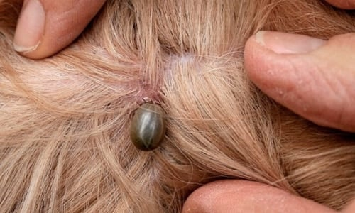
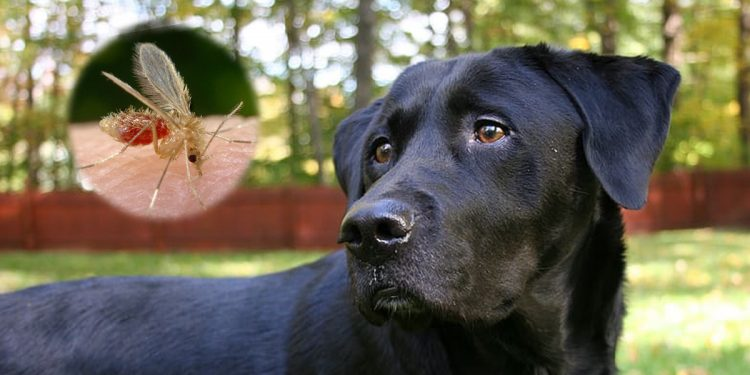

Son muchas las distintas enfermedades que pueden ocasionar los parásitos en nuestros perros. Estas serán más o menos graves dependiendo de distintos factores, como el perro o la bacteria. Así, entre algunas de las enfermedades parasitarias en los perros que podemos destacar podrían ser:
Ehrlichiasis:
Esto es una Zoonosis causada como consecuencia de una infección por la bateria Rickettsia (Erlichia canis) la cual se transmite a través de las garrapatas.
Su evolución es lenta y podemos confundir los síntomas con los de la Leishmaniosis por ser bastante parecidos. Entre ellos, podemos descubrir secreciones oculares, fases de fiebre intermitentes, epistasis, ganglios atrofiados o anemias. Es muy habitual encontrarnos con recídas si nuestro perro ha causado esta enfermedad y su tratamiento suele ser realizado a base de antibióticos. Fundamentalmente tetraciclinas.

Babesiosis:
En este caso, la infección viene generada a través de un protozoo intraeritrocitario llamado Babesia Canis. Como en la Ehrlichiasis, esta enfermedad es causada gracias a las garrapatas, provocando una anemia grave en la sangre. Además, en muchas ocasiones se complica por hepatonefritis.
Así, las babesias entran dentro de los hematíes, se reproducen y se multiplican en su interior, para acabar destruyéndolos. Lo más normal es que esto produzca hemoglobinuria, es decir, la orina se tiñe de color rojo.
Para conseguir establecer un diagnóstico, realizaremos pruebas hemográficas, detectando anemias en la sangre. Así, descubriremos el parásito en el interior de eritrocito. Lo más probable es que el doctor nos señale los pasos a seguir entre los que encontraremos seguramente una única inyección de Imidocarb.
Leishmaniosis:
Es nuestros días es una enfermedad muy conocida por tratarse de una enfermedad que afecta también al ser humano.
Como tal, se trata de una protozoosis derivada a través de la Leishmania donovani y es portada a través de insectos hematófagos. Por ejemplo, podemos destacar como portadores a los mosquitos flebotomos.
Entre su sintomatología, podemos destacar que se trata de una grave reticulohistocitosis que evoluciona de forma lenta. Debemos tener cuidado porque si no vigilamos su evolución esto puede derivar en la conocida caquexia o incluso la muerte.
En primer lugar, el insecto flebotomo pica a un animal, contagiándole la enfermedad. Posteriormente, se multiplican las leishmanias dentro del tubo digestivo y a partir de ahí se multiplica a su antojo.

Leishmaniosis visceral:
Entre los síntomas que podemos encontrar, se encuentra el adelgazamiento, algunas alteraciones renales, esplenomegália, o el aumento de la creatinina.
En cuanto a su tratamiento, lo más normal es tratarla con Leishmaniostáticos como el Alopurinol. Por desgracia, en nuestros días sólo existen paliativos por no existir una cura definitiva. Por esta razón, a esta enfermedad se la conoce como el sida de los perros.
Así, para prevenir a nuestro perro de ello, tendremos cuidado con las zonas de alta producción de mosquitos, como charcos y aguas estancadas durante los meses de mayor calor.